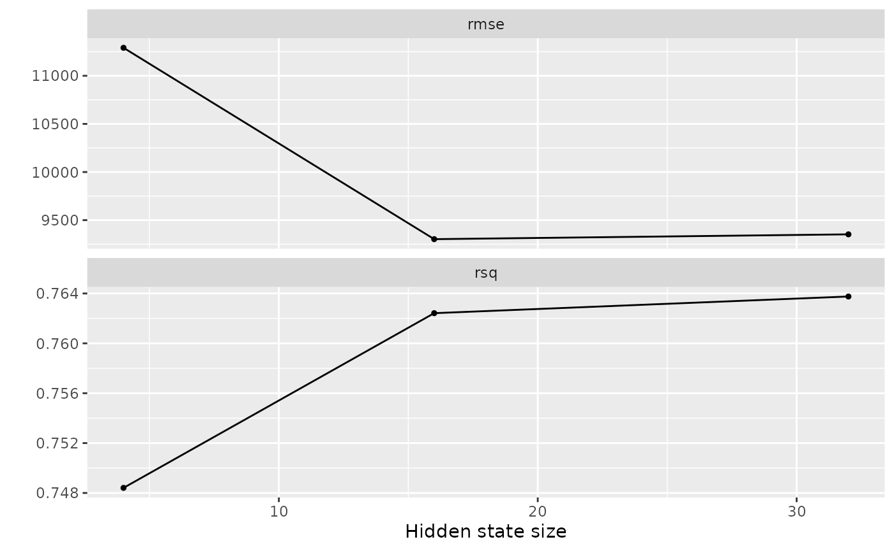

Getting started
Getting-started.Rmdtft is an R implementation of Temporal Fusion Transformers (TFT) using the torch package. The Temporal Fusion Transformer is a neural network architecture proposed by Bryan Lim et al. with the goal of making interpretable multi-horizon time-series forecasts.
The R package tft abstracts away the details of the architecture and provides an API that allows easy experimenting with the TFT architecture.
In this article we will create forecasts for the ?walmart_sales_weekly dataset included in the walmartdata package. This dataset has weekly sales of a sample of weekly sales by department of 45 retail stores. It also includes a few external predictors like the temperature, fuel price and the size of the store.
data(walmart_sales, package = "walmartdata")
dplyr::glimpse(walmart_sales)
#> Rows: 421,570
#> Columns: 16
#> $ Store <dbl> 1, 1, 1, 1, 1, 1, 1, 1, 1, 1, 1, 1, 1, 1, 1, 1, 1, 1, 1, …
#> $ Dept <dbl> 1, 1, 1, 1, 1, 1, 1, 1, 1, 1, 1, 1, 1, 1, 1, 1, 1, 1, 1, …
#> $ Date <date> 2010-02-05, 2010-02-12, 2010-02-19, 2010-02-26, 2010-03-…
#> $ Weekly_Sales <dbl> 24924.50, 46039.49, 41595.55, 19403.54, 21827.90, 21043.3…
#> $ Type <chr> "A", "A", "A", "A", "A", "A", "A", "A", "A", "A", "A", "A…
#> $ Size <dbl> 151315, 151315, 151315, 151315, 151315, 151315, 151315, 1…
#> $ Temperature <dbl> 42.31, 38.51, 39.93, 46.63, 46.50, 57.79, 54.58, 51.45, 6…
#> $ Fuel_Price <dbl> 2.572, 2.548, 2.514, 2.561, 2.625, 2.667, 2.720, 2.732, 2…
#> $ MarkDown1 <dbl> NA, NA, NA, NA, NA, NA, NA, NA, NA, NA, NA, NA, NA, NA, N…
#> $ MarkDown2 <dbl> NA, NA, NA, NA, NA, NA, NA, NA, NA, NA, NA, NA, NA, NA, N…
#> $ MarkDown3 <dbl> NA, NA, NA, NA, NA, NA, NA, NA, NA, NA, NA, NA, NA, NA, N…
#> $ MarkDown4 <dbl> NA, NA, NA, NA, NA, NA, NA, NA, NA, NA, NA, NA, NA, NA, N…
#> $ MarkDown5 <dbl> NA, NA, NA, NA, NA, NA, NA, NA, NA, NA, NA, NA, NA, NA, N…
#> $ CPI <dbl> 211.0964, 211.2422, 211.2891, 211.3196, 211.3501, 211.380…
#> $ Unemployment <dbl> 8.106, 8.106, 8.106, 8.106, 8.106, 8.106, 8.106, 8.106, 7…
#> $ IsHoliday <lgl> FALSE, TRUE, FALSE, FALSE, FALSE, FALSE, FALSE, FALSE, FA…To make the example faster to run, we are going to create models for the first 2 stores.
Preparing the data
The first thing we need to make sure is that our dataset doesn’t have implicit missing observations. This happens when an observations is just not present in the data instead of being explicitly marked with a NA. We are going to use tsibble functionality to add the implicitly missing observations, but you could use whatever tool you prefer for the task.
sales <- walmart_sales %>%
tsibble::tsibble(
key = c(Store, Dept, Type, Size),
index = Date
) %>%
tsibble::group_by_key() %>%
tsibble::fill_gaps(
Weekly_Sales = 0,
IsHoliday = FALSE
) %>%
tidyr::fill(Size, Temperature, Fuel_Price, CPI, Unemployment, .direction = "down")tft can treat columns in the dataset differently depending on their types. There are mainly 5 types of columns:
- ‘index’: is a single date column that specifies at which point in time the observation refers to. This is not directly used by the model itself, but is used internally to create rolling windows and order observations.
- ‘key’: are groups of columns that identify a single time series. Keys are necessary if you are creating predictions for multiple time series in a single model. By default, ‘keys’ are considered ‘static’ predictors by the model.
- ‘static’: predictors are considered ‘static’ when they don’t vary over time, they are information from the time-series, like a region or a kind of product.
- ‘unknown’ are predictors that vary over time but we only know values observed for past observations. For example, you can use the daily temperature as a predictor, but you only know it for past observations.
- ‘known’ are predictors that vary over time and are known even for future observations. For example, the day of the week can be used as a predictor for a daily time series, and it’s known for every time step, no matter if it’s from past or future.
The recipes package is used to specify how the model should treat each column of the dataset.
rec <- recipe(Weekly_Sales ~ ., data = sales) %>%
update_role(Date, new_role = "index") %>%
update_role(Store, Dept, Type, Size, new_role = "key") %>%
update_role(IsHoliday, new_role = "known") %>%
step_date(Date, role = "known", features = c("year", "month", "doy")) %>%
step_normalize(all_numeric_predictors()) %>%
step_indicate_na(starts_with("MarkDown")) %>%
step_impute_mean(starts_with("Markdown")) %>%
step_include_roles()It’s recommended to include features that represent seasonality as known predictors in the TFT model, like mon, day of the week and etc. It’s also recommended to normalize the predictors and treat missing values as the model don’t treat them implicitly.
You can bake prep and juice the recipe to see how the transformations are working:
rec %>% prep() %>% juice() %>% glimpse()
#> Rows: 572
#> Columns: 24
#> $ Store <dbl> 1, 1, 1, 1, 1, 1, 1, 1, 1, 1, 1, 1, 1, 1, 1, 1, 1, 1,…
#> $ Dept <dbl> 1, 1, 1, 1, 1, 1, 1, 1, 1, 1, 1, 1, 1, 1, 1, 1, 1, 1,…
#> $ Date <date> 2010-02-05, 2010-02-12, 2010-02-19, 2010-02-26, 2010…
#> $ Type <fct> A, A, A, A, A, A, A, A, A, A, A, A, A, A, A, A, A, A,…
#> $ Size <dbl> 151315, 151315, 151315, 151315, 151315, 151315, 15131…
#> $ Temperature <dbl> -1.74810944, -2.00407912, -1.90842730, -1.45711234, -…
#> $ Fuel_Price <dbl> -1.5197484, -1.5760615, -1.6558384, -1.5455586, -1.39…
#> $ MarkDown1 <dbl> 2.135878e-17, 2.135878e-17, 2.135878e-17, 2.135878e-1…
#> $ MarkDown2 <dbl> 7.530688e-18, 7.530688e-18, 7.530688e-18, 7.530688e-1…
#> $ MarkDown3 <dbl> -2.445418e-17, -2.445418e-17, -2.445418e-17, -2.44541…
#> $ MarkDown4 <dbl> 8.185461e-18, 8.185461e-18, 8.185461e-18, 8.185461e-1…
#> $ MarkDown5 <dbl> 5.606176e-17, 5.606176e-17, 5.606176e-17, 5.606176e-1…
#> $ CPI <dbl> -1.089091, -1.055483, -1.044657, -1.037627, -1.030597…
#> $ Unemployment <dbl> 0.9556973, 0.9556973, 0.9556973, 0.9556973, 0.9556973…
#> $ IsHoliday <lgl> FALSE, TRUE, FALSE, FALSE, FALSE, FALSE, FALSE, FALSE…
#> $ Weekly_Sales <dbl> 24924.50, 46039.49, 41595.55, 19403.54, 21827.90, 210…
#> $ Date_year <dbl> 2010, 2010, 2010, 2010, 2010, 2010, 2010, 2010, 2010,…
#> $ Date_month <fct> Feb, Feb, Feb, Feb, Mar, Mar, Mar, Mar, Apr, Apr, Apr…
#> $ Date_doy <dbl> 36, 43, 50, 57, 64, 71, 78, 85, 92, 99, 106, 113, 120…
#> $ na_ind_MarkDown1 <int> 1, 1, 1, 1, 1, 1, 1, 1, 1, 1, 1, 1, 1, 1, 1, 1, 1, 1,…
#> $ na_ind_MarkDown2 <int> 1, 1, 1, 1, 1, 1, 1, 1, 1, 1, 1, 1, 1, 1, 1, 1, 1, 1,…
#> $ na_ind_MarkDown3 <int> 1, 1, 1, 1, 1, 1, 1, 1, 1, 1, 1, 1, 1, 1, 1, 1, 1, 1,…
#> $ na_ind_MarkDown4 <int> 1, 1, 1, 1, 1, 1, 1, 1, 1, 1, 1, 1, 1, 1, 1, 1, 1, 1,…
#> $ na_ind_MarkDown5 <int> 1, 1, 1, 1, 1, 1, 1, 1, 1, 1, 1, 1, 1, 1, 1, 1, 1, 1,…Metrics and validation
Now we should think about the size of the horizon we want to create forecasts to. It could be a single week ahead or ten, and this will influence how we split our data for training, validation and testing. This is not really a data analysis decision but more of a business decision, ie: how many weeks ahead we want know so we can plan the demand and etc. Let’s say we want 4 weeks ahead, ie ~1 month.
The rsample package provides sliding_* functions that are very useful for the task of creating time splits.
resamples <- sliding_period(
arrange(sales, Date),
index = Date,
period = "week",
lookback = Inf,
assess_stop = 4,
step = 4,
skip = 104
)Now we can separate the splits in, training and testing, ie: a few of them will be used for cross-validation and choosing the hyperparamerters, the others are used for testing the model. We are going to use the last 4 splits for testing and the first 5 to cross validate.
train_splits <- resamples %>%
slice(1:5) %>%
structure(class = "rset")
test_splits <- resamples %>%
slice(-c(1:5)) %>%
structure(class = "rset")Note: we have selected 4 weeks as the horizon of our predictions. We need to use this same value when specifying the horizon for the tft model.
Fitting the model
We can now tune the tft model and compute metrics using:
tft_model <- temporal_fusion_transformer(
horizon = 4,
lookback = 100,
hidden_state_size = tune()
) %>%
set_engine("torch", verbose = FALSE) %>%
set_mode("regression")
model <- workflow() %>%
add_recipe(rec) %>%
add_model(tft_model)
grid <- tibble::tibble(
hidden_state_size = c(4, 16, 32)
)
results <- tune_grid(
model,
resamples = train_splits,
grid = grid,
control = control_grid(verbose = TRUE)
)
#> i Slice1: preprocessor 1/1
#> ✓ Slice1: preprocessor 1/1
#> i Slice1: preprocessor 1/1, model 1/3
#> ✓ Slice1: preprocessor 1/1, model 1/3
#> i Slice1: preprocessor 1/1, model 1/3 (predictions)
#> i Slice1: preprocessor 1/1, model 2/3
#> ✓ Slice1: preprocessor 1/1, model 2/3
#> i Slice1: preprocessor 1/1, model 2/3 (predictions)
#> i Slice1: preprocessor 1/1, model 3/3
#> ✓ Slice1: preprocessor 1/1, model 3/3
#> i Slice1: preprocessor 1/1, model 3/3 (predictions)
#> i Slice2: preprocessor 1/1
#> ✓ Slice2: preprocessor 1/1
#> i Slice2: preprocessor 1/1, model 1/3
#> ✓ Slice2: preprocessor 1/1, model 1/3
#> i Slice2: preprocessor 1/1, model 1/3 (predictions)
#> i Slice2: preprocessor 1/1, model 2/3
#> ✓ Slice2: preprocessor 1/1, model 2/3
#> i Slice2: preprocessor 1/1, model 2/3 (predictions)
#> i Slice2: preprocessor 1/1, model 3/3
#> ✓ Slice2: preprocessor 1/1, model 3/3
#> i Slice2: preprocessor 1/1, model 3/3 (predictions)
#> i Slice3: preprocessor 1/1
#> ✓ Slice3: preprocessor 1/1
#> i Slice3: preprocessor 1/1, model 1/3
#> ✓ Slice3: preprocessor 1/1, model 1/3
#> i Slice3: preprocessor 1/1, model 1/3 (predictions)
#> i Slice3: preprocessor 1/1, model 2/3
#> ✓ Slice3: preprocessor 1/1, model 2/3
#> i Slice3: preprocessor 1/1, model 2/3 (predictions)
#> i Slice3: preprocessor 1/1, model 3/3
#> ✓ Slice3: preprocessor 1/1, model 3/3
#> i Slice3: preprocessor 1/1, model 3/3 (predictions)
#> i Slice4: preprocessor 1/1
#> ✓ Slice4: preprocessor 1/1
#> i Slice4: preprocessor 1/1, model 1/3
#> ✓ Slice4: preprocessor 1/1, model 1/3
#> i Slice4: preprocessor 1/1, model 1/3 (predictions)
#> i Slice4: preprocessor 1/1, model 2/3
#> ✓ Slice4: preprocessor 1/1, model 2/3
#> i Slice4: preprocessor 1/1, model 2/3 (predictions)
#> i Slice4: preprocessor 1/1, model 3/3
#> ✓ Slice4: preprocessor 1/1, model 3/3
#> i Slice4: preprocessor 1/1, model 3/3 (predictions)
#> i Slice5: preprocessor 1/1
#> ✓ Slice5: preprocessor 1/1
#> i Slice5: preprocessor 1/1, model 1/3
#> ✓ Slice5: preprocessor 1/1, model 1/3
#> i Slice5: preprocessor 1/1, model 1/3 (predictions)
#> i Slice5: preprocessor 1/1, model 2/3
#> ✓ Slice5: preprocessor 1/1, model 2/3
#> i Slice5: preprocessor 1/1, model 2/3 (predictions)
#> i Slice5: preprocessor 1/1, model 3/3
#> ✓ Slice5: preprocessor 1/1, model 3/3
#> i Slice5: preprocessor 1/1, model 3/3 (predictions)
autoplot(results)
Once you are happy with the tuning you can finalize the workflow and obtain the metrics for the test splits.
final_params <- select_best(results, metric = "rmse")
model <- finalize_workflow(model, final_params)
results <- fit_resamples(model, test_splits)
collect_metrics(results)
#> # A tibble: 2 × 6
#> .metric .estimator mean n std_err .config
#> <chr> <chr> <dbl> <int> <dbl> <chr>
#> 1 rmse standard 4298. 4 758. Preprocessor1_Model1
#> 2 rsq standard 0.977 4 0.00687 Preprocessor1_Model1To obtain predictions for future observations, first we need to load a data.frame that includes known predictors like the IsHoliday variable for all time steps in the future data frame. Then we can call forecast or predict to obtain the predictions for the future data.
Note that forecast or predict currently can only predict for horizon time steps ahead. And don’t provide a away for doing rolling forecasts.
new_data <- walmartdata::walmart_sales_test %>%
filter(Store %in% c(1, 2), Dept %in% c(1,2)) %>%
filter(Date <= lubridate::ymd("2012-11-23"))
final_model <- fit(model, sales)
final_predictions <- predict(final_model, new_data = new_data)
final_predictions
#> # A tibble: 16 × 4
#> .pred_lower .pred .pred_upper .pred_at
#> <dbl> <dbl> <dbl> <date>
#> 1 10867. 23310. 35770. 2012-10-26
#> 2 10865. 23355. 35697. 2012-10-26
#> 3 10836. 23349. 35620. 2012-10-26
#> 4 10803. 23332. 35561. 2012-10-26
#> 5 42036. 46381. 50732. 2012-10-26
#> 6 42035. 46396. 50706. 2012-10-26
#> 7 42025. 46394. 50679. 2012-10-26
#> 8 42013. 46388. 50658. 2012-10-26
#> 9 13853. 31928. 50026. 2012-10-26
#> 10 13850. 31994. 49924. 2012-10-26
#> 11 13808. 31987. 49816. 2012-10-26
#> 12 13760. 31963. 49731. 2012-10-26
#> 13 60166. 66304. 72451. 2012-10-26
#> 14 60166. 66327. 72415. 2012-10-26
#> 15 60152. 66324. 72378. 2012-10-26
#> 16 60135. 66316. 72349. 2012-10-26